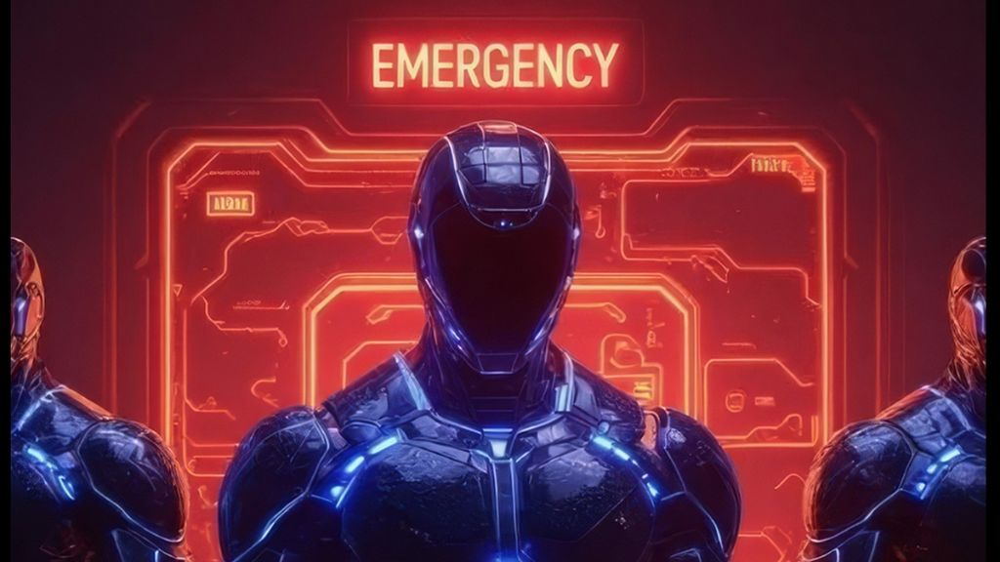

New Artists Redefining 2025

The following feature is now included in our online magazine which is also available in print.
Issue #7
Online Magazine | Print MagazineFor more details contact us at: volechomag@gmail.com
Jasmith Finds the Bright Side on Festive Night
Festive Night lands with that kind of spark that makes you forget how heavy the world can feel. Singapore's Jasmith keeps things simple on the surface, but there is a quiet intention behind the song's bright pulse. Built on clean production and a hook which nudges you into a good mood before you even notice, the track works the way a scene in a feel-good film does: like that moment in Crazy Rich Asians when the lights warm up, and everything turns soft for a second. It is pop built for actual human joy, not the forced kind.
He takes care of literally every part of the project himself, and for that, the song has a warm clarity, with an early Lauv or Conan Gray's sweet side to it. The beat has that gentle lift, the vocals sit well in the pocket, and nothing is trying too hard. It's that kind of song where you could slide next to Troye Sivan's lighter singles or any playlist built around nights that go a little later than planned. There's also a hint of that K-pop glow-something you'd hear tucked into the soundtrack of a drama right before the two lead characters pretend they're not falling for each other.
What makes Festive Night work is how honest it feels about its own job: it wants to give you a few minutes of relief, and it succeeds without leaning on big statements. Jasmith seems aware that cheerful songs can hit just as deep as sad ones when they come from the right place. If this is the first step in a longer path, it's a promising one. The song feels ready for any playlist that needs a lift, and that alone is a solid start for someone carving out their own lane with patience and care.
Anke Richards — Quiet Fire in Another Realm
Anke Richards has long occupied that subtle space between whisper and atmosphere, but Another Realm feels like the moment her sound crystallizes into something unmistakably her own. Built in collaboration with Grammy-nominated writer Dante Lattanzi, the single stretches a soft, nocturnal glow across its entire runtime. Richards sings as though the room is dark and you're the only one awake with her-every breath is purposeful, every pause carries its own weight. Her voice hovers just above glassy synths that widen slowly, like light settling across still water at midnight.
Her rise has been quiet but sure-more than 17 million streams without the flashier trappings of a viral breakout-and this track shows exactly why she's found an audience. She holds the same shadowy spark that fans of Billie Eilish or Tate McRae gravitate towards, except she occupies a gentler emotional register, closer to AURORA's soft luminescence or Daughter's early hushed confessions. Cinematic touches slip into the production almost without notice, giving the track the widescreen stillness of a late-night sci-fi sequence or the eerie calm of a series like Dark.
It further deepens Another Realm for its connection to Artists for Sea Shepherd-a partnership that makes streams and shares real support for marine conservation, a purpose folded discreetly into the song's atmosphere rather than stamped across it. Richards achieves something rare here: a sound both grounded and weightless, personal and expansive, the kind of track built for late-night drives, headphone nights, and quiet apartments where thoughts are allowed to settle slowly. If this is the energy Richards is carrying into 2025, it marks the beginning of a powerful stretch. Another Realm doesn't shout; it settles, it glows, and it lingers. In a year already crowded with maximalist pop, her ability to pull listeners inward might be the exact calm listeners return to again and again.
Hellkern Warriors — The Pulse of the Void
Hellkern Warriors arrived in 2025 not so much with a launch as with a rupture-a darkwave signal slicing through static from three continents at once. Formed around early sketches from Tom Radar, the group expanded quickly into a full-scale electronic-gothic hybrid when Kabal, Mauricio, and Fabian added their own weight and atmosphere. What began as a handful of shadowy demos-Hellkern Warriors, Petrol & Water, Endless Road-grew into a conceptual world they now call The Pulse of the Void, a sonic space defined by analog synth grit, cold guitar lines, and a heartbeat that moves like machinery learning to feel. Their name references a computer worm, fitting for a band that moves quietly through the dark but cuts unmistakable tracks in their wake. Their debut video, released September 2025, set the tone with stark, minimal visuals and a sound that feels equally suited for late-night playlists, underground basements, or the neon-tinged melancholy of films like The Crow or Underworld. The follow-up single, Petrol & Water, pushed deeper into their signature cold glow.
Each member arrives with a history that shapes the project’s depth. Tom Radar’s previous work in RADARFIELD built an international following with its careful balance of emotion and electronic precision. Kabal—also known as Dylan Phoenix—has decades behind him across metal, goth, and EBM scenes, giving Hellkern its poetic tension and sharpened edges. Meanwhile, Colombian musicians Fabian and Mauricio bring a heavy discipline from their metal roots, grounding the project’s electronic pulse with a sense of physical force.
The result is a sound that lands somewhere between the chill of Boy Harsher, the brooding minimalism of She Past Away, and the slow-burn tension found in retro-leaning shows like Stranger Things. It’s early days for Hellkern Warriors, but they already carry the clarity of a band that knows its terrain. These tracks hit like headlights on an empty highway—steady, ghostly, and impossible to ignore.
If The Pulse of the Void is only the beginning, then Hellkern Warriors are carving out a realm listeners will want to inhabit for a long time.
Chris Oledude — Turning Tables, Turning Heads
Chris Oledude has long been a sharp, steady voice for when conversations get complicated, but Turning Tables feels like a moment where message and groove meet in perfect balance. The third single from his debut album Preacher Man Vol. 1, the track hits with a confident, unhurried funk that moves with the bounce of early Curtis Mayfield while carrying the warmth of New York street-corner soul. Featuring a vibrant duet with Lindsey Wilson, the song plays like two friends trading truths at a block party—fiery, playful, and urgent.
What really makes Turning Tables hit even harder, though, is the path it traveled to get here. Sparked originally by writer Dr. Lora Ellen McKinney, the track moved through Oledude's live shows, rewrites, and long, careful studio sessions across Woodstock and lower Manhattan before settling into its final form. You can hear that lived-in quality throughout: backing vocals filled by friends and longtime collaborators, instrumentation that feels played rather than arranged, and a rhythm section that carries the easy authority of musicians who have spent decades honing their craft.
The roots of Oledude run deep. Raised in a home where protest songs lived beside folk and pop, he developed early on an instinct for music that speaks plainly while still moving with joy. His 1984 cassette Anyone's Revolution already hinted at the voice he would eventually grow into, and his years of civic engagement only sharpened the urgency and compassion layered into his new work. Now, returning fully to art after loss and reflection, he sounds clearer and more grounded than ever.
Turning Tables also serves as an entrance into the greater universe of Preacher Man Vol. 1, an album that represents forty years of writing, yet feels strikingly present. It fits seamlessly beside Brittany Howard's "Stay High," The Roots' "You Got Me," or the soulful narrative style that carries through Spike Lee's Do the Right Thing.
Oledude isn't chasing trends; he's building a lane rooted in rhythm, truth, and community. On Turning Tables, that lane feels wide open.
Agent of Kaos (AOK) — Voltage Rising
Agent of Kaos, better known across the EDM circuit as AOK, has reached 2025 with a fire he's no longer interested in containing. A familiar name within the Musosoup community, he has always made solid, high-energy tracks, but he's also the first to say they were warm-ups. Now, he's pivoting into a months-long blitz of releases aimed squarely at the dance floor: heavier, sharper, more chaotic, and more precise. Coming out of Denver-a city where bass culture runs through venues like an underground current-AOK is stepping into this new phase with unmistakable purpose.
His foundations lie in bass-driven production, but he refuses to stay caged by genre. Instead, he treats bass as a launchpad, pushing into festival-scale drops, left-turn structures, and atmospheric builds that echo industry giants like RL Grime, Kayzo, and early Skrillex without ever falling into mimicry. There's a rawness embedded in his sound-a willingness to distort, break, and rebuild patterns-that places him in the rising crowd alongside Rezz, Subtronics, and ISOxo.
Beyond his own output, AOK leads Church Of Us Records, a label built to amplify new producers navigating an industry that often buries fresh voices under algorithms and noise. His commitment to creating community over clout hints at the long game he's playing: not just momentary impact, but sustained movement.
AOK's new run leans into the cinematic too, music that mirrors the neon fever of Blade Runner 2049 or the pulsing energy of the Arcane soundtrack. He builds tension with the confidence of someone who knows exactly when the floor will fall out and precisely how the crowd will respond. If you're preparing for what's next, cue him up beside Rezz's darker cuts or ISOxo's explosive drops. This new era is built for late nights, sweat-soaked rooms, and that communal electricity that hits the moment the beat snaps into place. Whatever AOK delivers next, one thing is clear: it's going to be loud.
Simonne Draper — Strings in Motion, Light in the Quiet
Simonne Draper moves with a composer's precision and an explorer's restlessness, fashioning a sonic world in which classical guitar meets modern atmosphere but never loses its emotional center. Based between Prague and Kent, Draper forged her artistry through discipline and reinvention-starting in law before throwing herself full-time into composition under Milan Tesar. Early acclaim arrived with Portraits in Guitar, a record that captured both radio and print across Europe, consolidating her as a guitarist capable of striking clarity. But Draper would never stay there. Her next project, Silence of Eclipse, pushed deeper into mood and narrative: a mix of the intimacy of acoustic lines with discreet modern touches redolent of the quiet tension of Gustavo Santaolalla or the spacious, emotional landscapes of Ryuichi Sakamoto. To listen to Draper is to watch light shift across a room-slow, precise, deeply evocative. Her music could sit inside a Denis Villeneuve film or in the shadowy emotional framework of a series like Dark, where sound becomes an invisible storyteller. Draper's recent collaborations show just how fluidly she moves between worlds. Working with GRAMMY-winner Alexx Antaeus and producer Jon Kennedy, she brings her guitar into clean electronic and downtempo spaces to create a blend that feels organic rather than forced. It's the same balance that artists such as Nils Frahm or Bonobo achieve-acoustic warmth acting as the anchor that holds electronic layers steady. Her award-winning pieces, Espanola and Canzonetta dell’Acqua, are markers of creative clarity rather than arrival. Draper writes with intent but never with a straitjacket; she lets silence, breath, and restraint become part of the composition. Whether crafting meditative solo work or stepping into projects with an electronic lean, she maintains an unmistakable voice: grounded, emotional, and quietly luminous. Those for whom solace has been found in Max Richter's Sleep, Sakamoto's async, or the softer outlines of Tycho will feel instantly at home in Draper's catalog. Her music isn't built for quick thrills-it rewards slow listening, attentive moments, and rooms where quiet feels like its own instrument. Draper stands firmly in the middle of a new movement: artists who understand that calm carries power.
Pointe — Guard Rails and the Art of Tension Brisbane's rising alt-indie outfit Pointe arrive with Guard Rails, a debut single that already carries the grip of a band well beyond their years. Formed in high school and now stepping into a wider spotlight, the quartet-Rose Fogarty, Evander Adams Post, Jude Spann, and Jake Park-craft a sound built on soft tension, emotional clarity, and the kind of raw intuition that young bands rarely capture this early. Guard Rails centers on a moment suspended between dread and change-the uneasy stretch before life shifts direction. Fogarty's voice pulls that feeling forward with a mix of fragility and insistence. She doesn't belt; she bears weight quietly, the way Dolores O'Riordan once could, or the way Interpol's Paul Banks let cold, steady cadence carry whole scenes. The band wraps her in atmospheric restraint: patient drums, a close-mic'd piano, bass that moves with intention, and guitar lines that slip in like unanswered questions. Listeners might hear echoes of Daughter's early work or the moodier corners of Wolf Alice, but Pointe carve their own shape in the quiet. Paul Blakey's mastering adds a spacious minimalism that lets tiny details land with force-a breath, a tremble, a shift in tone. Despite their youth, Pointe have already packed out rooms at The Cave Inn, a testament to the immediacy of their live presence. Their shows carry that same balance of vulnerability and precision, a push-pull of softness and pressure. It's not flashy; it's intimate. And intimacy tends to travel far. If you're building a playlist around Guard Rails, pair it with The National's Trouble Will Find Me, Wet Leg's gentler cuts, or the drifting neon melancholy of a Gregg Araki soundtrack. Pointe occupy that hazy territory where fear turns into motion and where hesitation becomes the spark for something new. As their debut EP approaches, Guard Rails stands as both a beginning and a promise. Pointe are learning how to turn tension into melody-and they're doing it with startling control.
This dispatch was last updated on November 24, 2025